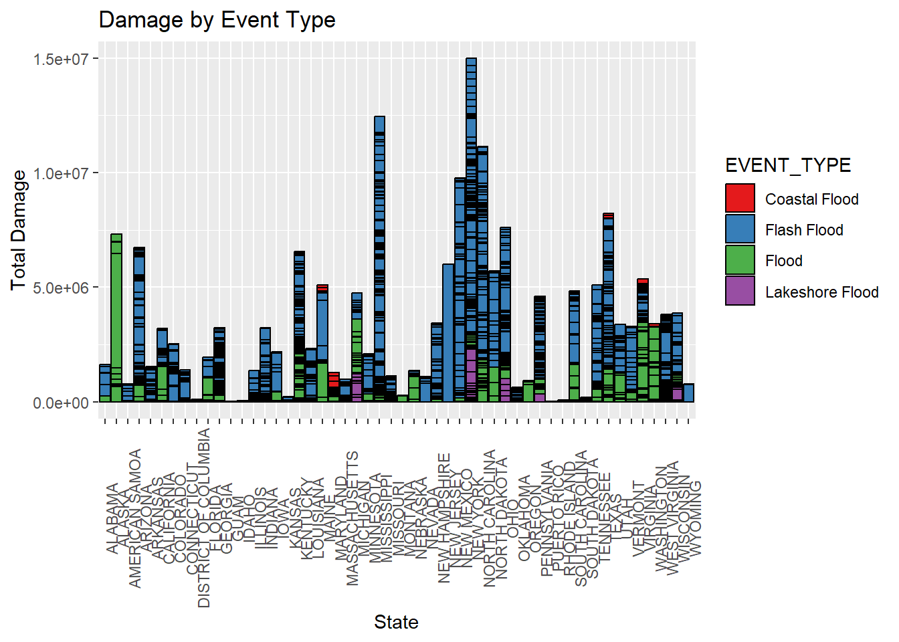
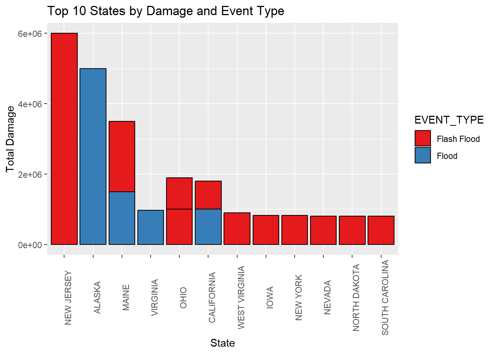
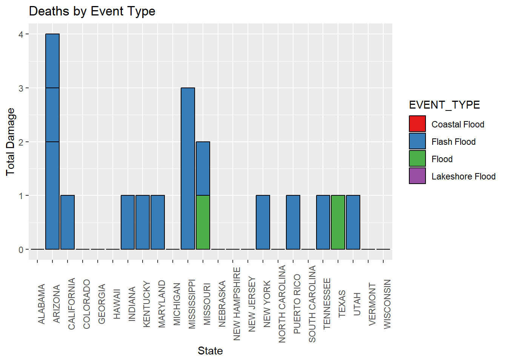
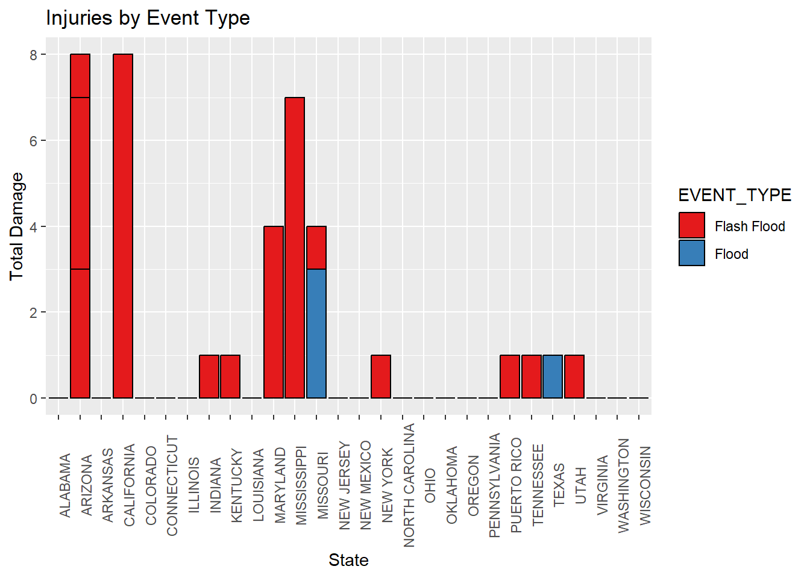
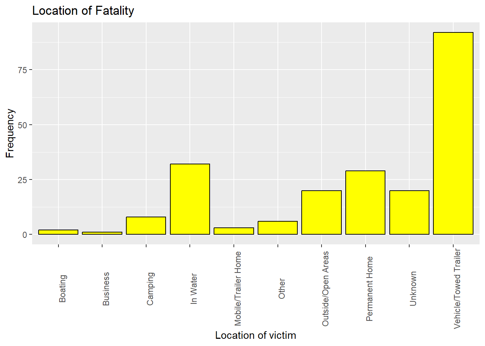
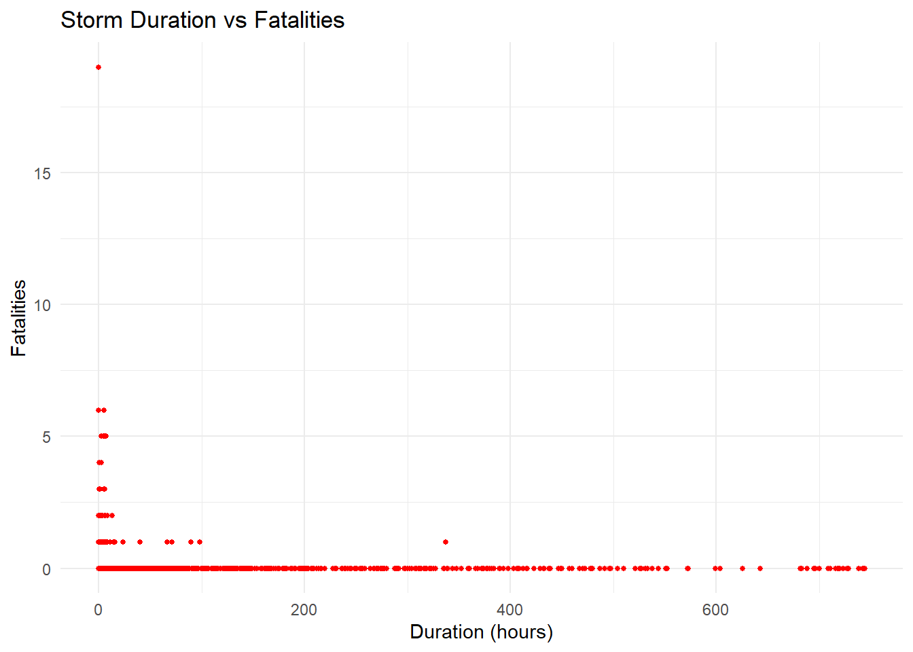
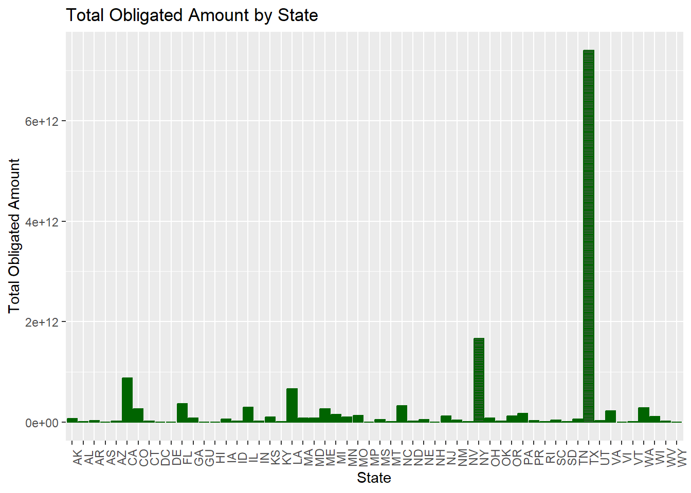
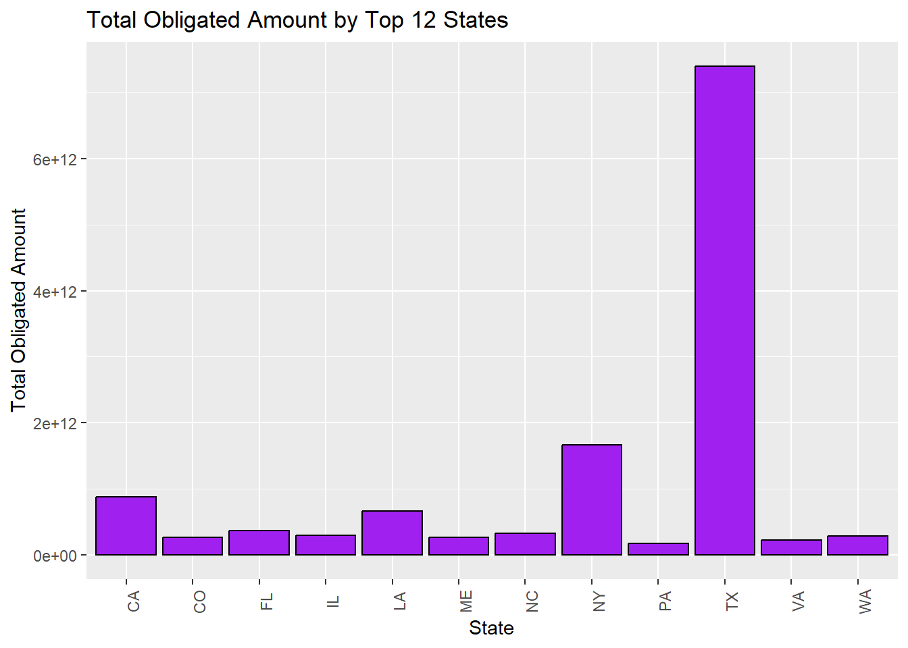

The study examines the multifaceted impact of floods through a comprehensive visual analysis. The graphs portray various dimensions—damage, fatalities, injuries, flood duration, and FEMA declarations.
### Human Toll and Geographical Insights
Examining fatalities, injuries, and their geographic distribution, the graphs highlight the human cost and geographical vulnerability to flood-related incidents.
### Flood Duration’s Impact
Correlating flood duration with damage or fatalities reveals insights. The absence of significant correlation suggests maximum damage during the initial stages of floods.
### FEMA Declarations and Response Times
The evaluation of FEMA declarations and waiting times showcases administrative disparities in emergency response and recovery times.
### Conclusion
This visual narrative highlights the multifaceted impacts of floods and advocates for tailored disaster response strategies. It emphasizes adaptive planning and resource allocation to mitigate flood effects.
#installing the libraries and reading in the necessary data setslibrary(readr)library(knitr)library(dplyr)
Attaching package: 'dplyr'
The following objects are masked from 'package:stats':
filter, lag
The following objects are masked from 'package:base':
intersect, setdiff, setequal, union
library(ggplot2)library(maps)
Warning: package 'maps' was built under R version 4.3.2
library(lubridate)
Attaching package: 'lubridate'
The following objects are masked from 'package:base':
date, intersect, setdiff, union
#reading in the NOAA datasets for 2020 and 2021storm20 <-read.csv("C:/Users/Aabha/Downloads/615Midterm/StormEvents_details-ftp_v1.0_d2020_c20230927 (1).csv.gz")storm21 <-read.csv("C:/Users/Aabha/Downloads/615Midterm/StormEvents_details-ftp_v1.0_d2021_c20231017.csv.gz")#reading in the fatalities dataset from NOAHH for 2020 and 2021fata20 <-read.csv("C:/Users/Aabha/Downloads/615Midterm/StormEvents_fatalities-ftp_v1.0_d2020_c20230927.csv.gz")fata21 <-read.csv("C:/Users/Aabha/Downloads/615Midterm/StormEvents_fatalities-ftp_v1.0_d2021_c20231017.csv.gz")#reading in the FEMA datasets fema1 <-read_csv("DisasterDeclarationsSummaries (1).csv", show_col_types =FALSE)fema2 <-read_csv("FemaWebDisasterSummaries (3).csv", show_col_types =FALSE)
#cleaning of the NOAHH dataset#combine the datasets for the two yearsstorm <-rbind(storm20, storm21)#filter out the rows which have floodsstorm <- storm %>%filter(EVENT_TYPE %in%c('Lakeshore Flood', 'Flash Flood', 'Coastal Flood', 'Flood'))#drop the columns that are not needed storm <-subset(storm, select =-c(MAGNITUDE_TYPE, TOR_F_SCALE, TOR_LENGTH, TOR_WIDTH, TOR_OTHER_WFO, TOR_OTHER_CZ_STATE, TOR_OTHER_CZ_FIPS, TOR_OTHER_CZ_NAME, STATE_FIPS, CZ_TYPE, CZ_FIPS, EPISODE_ID, DATA_SOURCE))#converting the property and crop damage values in a numeric formatstorm$DAMAGE_PROPERTY <-gsub("K", "", storm$DAMAGE_PROPERTY)storm$DAMAGE_PROPERTY <-as.numeric(storm$DAMAGE_PROPERTY)
storm$DAMAGE_CROPS <-round(storm$DAMAGE_CROPS)storm$DAMAGE_CROPS <- storm$DAMAGE_CROPS *1000#cleaning of the fatalities datasetfata <-rbind(fata20, fata21)fatalities <-merge(storm, fata, by ="EVENT_ID", all=FALSE)
Understanding Flood Impact
The initial set of graphs examines the damage inflicted by different flood types across states. The top 10 states experiencing significant damage demonstrate variations in the impact of floods.It is evident from the graphs that Flash floods are the most dangerous and damage causing type of floods. The most impact on human life is in Alabama while the New Jersey sustained the highest damage. The graphs highlightn cost and geographical vulnerability to flood-related incidents.
#Comparing the types of damages done by the different types of floods#number of events of each stateflood <- storm %>%count(EVENT_TYPE)storm$totaldamage <-rowSums(storm[c("DAMAGE_PROPERTY", "DAMAGE_CROPS")])storm$totalpeople <-rowSums(storm[c("DEATHS_INDIRECT", "DEATHS_DIRECT")])storm$totalinjuries <-rowSums(storm[c("INJURIES_INDIRECT", "INJURIES_DIRECT")])storm1 <- storm %>%filter(totaldamage !=0)storm2 <- storm %>%filter(totalinjuries !=0)storm3 <- storm %>%filter(totalpeople !=0)#damage done by floods by stateggplot(storm1, aes(x = STATE, y = totaldamage, fill = EVENT_TYPE)) +geom_bar(stat ="identity", color ="black") +labs(title ="Damage by Event Type", x ="State", y ="Total Damage") +theme(axis.text.x =element_text(angle =90)) +scale_fill_brewer(palette ="Set1")

#damage done by floods- the top 12 statestop_12_states <- storm1 %>%arrange(desc(totaldamage)) %>%head(15)ggplot(top_12_states, aes(x =reorder(STATE, -totaldamage), y = totaldamage, fill = EVENT_TYPE)) +geom_bar(stat ="identity", color ="black") +labs(title ="Top 10 States by Damage and Event Type", x ="State", y ="Total Damage") +theme(axis.text.x =element_text(angle =90)) +scale_fill_brewer(palette ="Set1")

#fatalities by stateggplot(storm2, aes(x = STATE, y = totalpeople, fill = EVENT_TYPE)) +geom_bar(stat ="identity", color ="black") +labs(title ="Deaths by Event Type", x ="State", y ="Total Damage") +theme(axis.text.x =element_text(angle =90)) +scale_fill_brewer(palette ="Set1")

#injuries by stateggplot(storm3, aes(x = STATE, y = totalinjuries, fill = EVENT_TYPE)) +geom_bar(stat ="identity", color ="black") +labs(title ="Injuries by Event Type", x ="State", y ="Total Damage") +theme(axis.text.x =element_text(angle =90)) +scale_fill_brewer(palette ="Set1")

#This graph clearly shows that driving during a flood is dangerous- the most deaths occur in a vehical during floods.location <- fatalities$FATALITY_LOCATION# Location of the fatalitiesggplot() +geom_bar(aes(x = location), fill ="yellow", color ="black") +labs(title ="Location of Fatality", x ="Location of victim", y ="Frequency")+theme(axis.text.x =element_text(angle =90))

Flood Duration’s Impact
Correlating flood duration with damage or fatalities reveals insights. The absence of significant correlation suggests maximum damage during the initial stages of floods.
#how long do floods last?storm$BEGIN_DATE_TIME <-as.POSIXct(storm$BEGIN_DATE_TIME, format ="%d-%b-%y %H:%M:%S")storm$END_DATE_TIME <-as.POSIXct(storm$END_DATE_TIME, format ="%d-%b-%y %H:%M:%S")storm$duration <-as.numeric(difftime(storm$END_DATE_TIME, storm$BEGIN_DATE_TIME, units ="hours"))storm$duration <-round(storm$duration, digits =2)#how much damage can floods do?ggplot(storm, aes(x = duration, y = totaldamage)) +geom_point(size =1, color ="blue") +labs(title ="Storm Duration vs Damage", x ="Duration (hours)", y ="Damage") +theme_minimal()
#how much lives do floods take?ggplot(storm, aes(x = duration, y = totalpeople)) +geom_point(size =1, color ="red") +labs(title ="Storm Duration vs Fatalities", x ="Duration (hours)", y ="Fatalities") +theme_minimal()

#we can see that theres not much correlation between the damage done and duration of the flood. Thus we can conclude that floods do the maximun damage in the first few minutes of occouring.
#cleaning the fema datasetsFEMA <-merge(fema1, fema2, by ="disasterNumber", all=FALSE)FEMA <- FEMA %>%filter(year(incidentBeginDate) ==2020)
FEMA Declarations and Response Times
The evaluation of FEMA declarations and waiting times showcases administrative disparities in emergency response and recovery times.
FEMA$totalObligatedAmountPa[is.na(FEMA$totalObligatedAmountPa)] <-0FEMA$totalObligatedAmountCatAb[is.na(FEMA$totalObligatedAmountCatAb)] <-0FEMA$totalObligatedAmountCatC2g[is.na(FEMA$totalObligatedAmountCatC2g)] <-0FEMA$total_obligated_amount <- FEMA$totalObligatedAmountPa + FEMA$totalObligatedAmountCatAb + FEMA$totalObligatedAmountCatC2gggplot(FEMA, aes(x = state, y = total_obligated_amount)) +geom_bar(stat ="identity", color ="darkgreen") +labs(title ="Total Obligated Amount by State", x ="State", y ="Total Obligated Amount") +theme(axis.text.x =element_text(angle =90))

total_obligated_by_state <- FEMA %>%group_by(state) %>%summarise(total_obligated_amount =sum(totalObligatedAmountPa + totalObligatedAmountCatAb + totalObligatedAmountCatC2g, na.rm =TRUE))top_12_states <- total_obligated_by_state %>%top_n(12, total_obligated_amount) %>%arrange(desc(total_obligated_amount))ggplot(top_12_states, aes(x = state, y = total_obligated_amount)) +geom_bar(stat ="identity", fill ="purple", color ="black") +labs(title ="Total Obligated Amount by Top 12 States", x ="State", y ="Total Obligated Amount") +theme(axis.text.x =element_text(angle =90))

FEMA$declarationDate <-ymd(FEMA$declarationDate)FEMA$disasterCloseoutDate <-ymd(FEMA$disasterCloseoutDate)# Calculate the time duration in days using lubridateFEMA$TIME <-as.numeric(interval(FEMA$declarationDate, FEMA$disasterCloseoutDate), "days")average_waiting_time <- FEMA %>%group_by(state) %>%summarise(avg_time =mean(TIME, na.rm =TRUE)) %>%arrange(avg_time)top_10 <- average_waiting_time %>%slice_tail(n =10)bottom_10 <- average_waiting_time %>%slice_head(n =10)ggplot(top_10, aes(x = state, y = avg_time)) +geom_bar(stat ="identity", fill ="cyan", color ="darkgreen") +labs(title ="Top 10 States with Highest Waiting Times", x ="State", y ="Average Waiting Time") +theme(axis.text.x =element_text(angle =45, hjust =1))
ggplot(bottom_10, aes(x = state, y = avg_time)) +geom_bar(stat ="identity", fill ="cyan", color ="darkgreen") +labs(title ="Bottom 10 States with Lowest Waiting Times", x ="State", y ="Average Waiting Time") +theme(axis.text.x =element_text(angle =45, hjust =1))